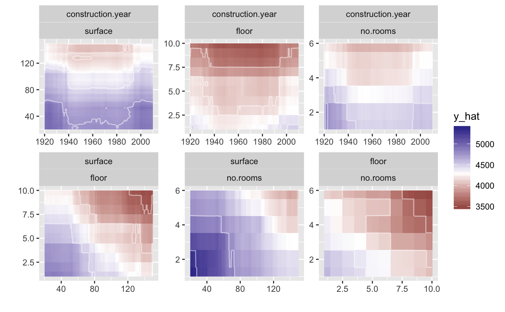
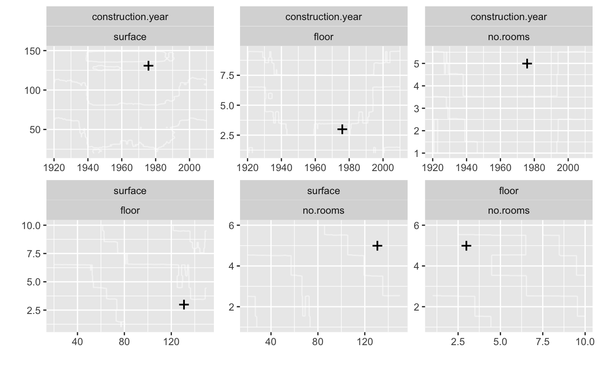

What If 2D Plots
Przemyslaw Biecek
2018-08-22
whatIf2d.RmdIntroduction
Here we present 2D What If plots.
First, an example for regression model.
library("DALEX")
library("ceterisParibus")
library("randomForest")
set.seed(59)
apartments_rf_model <- randomForest(m2.price ~ construction.year + surface + floor + no.rooms + district, data = apartments)
explainer_rf <- explain(apartments_rf_model,
data = apartmentsTest[,2:6], y = apartmentsTest$m2.price)
new_apartment <- apartmentsTest[1, ]
new_apartment## m2.price construction.year surface floor no.rooms district
## 1001 4644 1976 131 3 5 Srodmiescie## y_hat new_x1 new_x2 vname1 vname2 label
## 1 4899.536 1920 20.0 construction.year surface randomForest
## 2 4896.920 1920 21.3 construction.year surface randomForest
## 3 4900.060 1920 22.6 construction.year surface randomForest
## 4 4900.187 1920 23.9 construction.year surface randomForest
## 5 4901.809 1920 25.2 construction.year surface randomForest
## 6 4896.952 1920 26.5 construction.year surface randomForest

And an example for classification.
# HR data
model <- randomForest(status ~ gender + age + hours + evaluation + salary, data = HR)
pred1 <- function(m, x) predict(m, x, type = "prob")[,1]
explainer_rf_fired <- explain(model, data = HR[,1:5],
y = HR$status == "fired",
predict_function = pred1, label = "fired")
new_emp <- HR[1, ]
new_emp## gender age hours evaluation salary status
## 1 male 32.58267 41.88626 3 1 fired## y_hat new_x1 new_x2 vname1 vname2 label
## 1 0.472 20.00389 35.00000 age hours fired
## 1.1 0.524 20.00389 35.44978 age hours fired
## 1.2 0.582 20.00389 35.89955 age hours fired
## 1.3 0.570 20.00389 36.34933 age hours fired
## 1.4 0.540 20.00389 36.79911 age hours fired
## 1.5 0.582 20.00389 37.24889 age hours fired